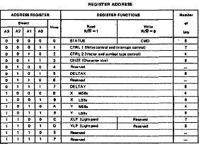

80-Bus Journal |
April/Mai/Juni 1984 · Ausgabe 2 |
| Bildschirmadresse in XLP und YLP | |
| D0-D7 | Datenbus |
| A0-A3 | Adreßbus |
| R/W | Read/Write- Signal |
| E | Enable (Chip Select) |
| IRQ | Interrupt request (durch CTRL1 programmierbar |
Die Grafikkarte ist für die Basisadresse 90H ausgelegt. Der GDP enthält nun eine Anzahl von Registern, die von dieser Basisadresse aus zu errechnen sind. (Register 0 =90, Reg. 1=91 etc).
Die Registeradressen finden Sie in der Tabelle.
Hier möchte ich nun die Funktion der Register beschreiben:
Beide sind 12-Bit-Register, die die Position des nächsten Punktes angeben, der in den Bildschirmspeicher geschrieben wird. Beim Y-Register wird nur die untere Hälfte benutzt (8 Bit=256 Punkte), beim X-Register wird nur dann die obere Hälfte benutzt, wenn die untere (LSBX) 255 überschreitet. Dann wird MSBX auf 1 gesetzt.
Beide 8 Bit- Register geben den Abstand auf X- und Y-Achse beim Linienzeichnen an. Sie enthalten vorzeichenlose Ganzzahlen.
Vergrößerungsfaktor beim Schreiben von Buchstaben und Symbolen. Das MSB des 8-Bit-Registers gibt den Faktor für X, das LSB den für Y an (also beide jeweils von 0 bis F).
Alle 7 Bits dieses Registers haben eine gesonderte Bedeutung:
Bit0
Wenn LOW ist kein Schreiben möglich
Bit1
LOW = löschen HIGH = schreiben
Bit2
LOW = normales Schreiben
HIGH = schnelles Schreiben ohne Bildschirm
Bit3
LOW = alle 12 Bits von X und Y sind signifikant. Es wir ein Bereich von
4096x 4096 Punkten verwendet (aber natürlich nicht abgebildet)
Bit4
LOW = unterdrückt den Interrupt, der durch den Lichtgriffel ausgelöst
wird
Bit5
LOW unterdrückt den Interrupt beim vertical blanking
Bit6
LOW = unterdrückt den Interrupt, der anzeigt, daß das System für einen
neuen Befehl bereit ist.
Durch dieses 4-Bit- Register werden die Parameter beim Schreiben von Vektoren und Buchstaben festgelegt:
| Bit0,1 | 4 Linientypen (siehe Tabelle) |
| Bit2 | LOW=gerade HIGH=schräg |
| Bit3 | LOW=waagrecht HIGH=senkrecht |
| Seite 12 von 52 |
|---|